概要
『The Walten Files』は、Martin Walls が2020年からYouTubeで公開している映像シリーズである。すでに消滅した企業「バニースマイルズ社（BSI）」の社内テープや子ども向けアニメを、アンソニーという人物が集めて公開した、という体裁をとる。1974年に開店したレストラン「Bon's Burgers」と、そこで歌うアニマトロニクスのバンド「ショーストッパーズ」を紹介する明るい映像に、行方不明者の顔や、ソフィーという人物に宛てた言葉が紛れ込んでいく。
『The Walten Files』で描かれる1974年前後の連続失踪事件とソフィー・ウォルテンの記憶を軸に、各映像の内容・確定事実・仮説を整理した考察データベースである。

『The Walten Files』は、Martin Walls が2020年からYouTubeで公開している映像シリーズである。すでに消滅した企業「バニースマイルズ社（BSI）」の社内テープや子ども向けアニメを、アンソニーという人物が集めて公開した、という体裁をとる。1974年に開店したレストラン「Bon's Burgers」と、そこで歌うアニマトロニクスのバンド「ショーストッパーズ」を紹介する明るい映像に、行方不明者の顔や、ソフィーという人物に宛てた言葉が紛れ込んでいく。


ジャックとフェリックスが大学で出会う
二人とも「動くパフォーマー」の構想を持っていた。実現までに16年かかる。
リンダ・トンプソンが、フェリックスの飲酒を日記に書く
飲酒が増え、午前4時に泣きながら帰宅したとある。日記は1974年まで続く。
モリー・ウォルテンが生まれる
ジャックとローズマリーの3人目の子ども。この頃、ジャックとフェリックスはレストランの構想をCyberFun Techへ持ち込んでいる。
フェリックスが新しい社員への挨拶を録音する
「友人のジャックも私も」と、ジャックの名を挙げて語る。
人形「Rocket」が作られる
クリスマスに、エドとモリーのために作られた灰色のウサギの人形。モリーが名前を付けた。
フェリックスが年末の挨拶を録音する
画面にBon's Burgersの開店予告のポスターが映る。語りにジャックの名前は出てこない。
飲酒運転の事故でエドとモリーが死亡する
学校のパーティーからの帰り道、フェリックスの運転する車が事故を起こす。フェリックスは二人の遺体をセントジョアナの森に埋めた。同じ日、リンダは別れの手紙を残してフェリックスのもとを去っている。
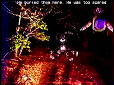
ジャックがフェリックスの家へ押しかける
午前0時23分、ジャックは「もしお前があの子たちに何かしたなら、俺はお前を殺してやる」と言う。午前8時56分と表示される朝の場面では、フェリックスが遺体を埋めた森の崖で飛び降りようとするが、踏みとどまる。
ブライトン市警がクリアヒルリバーを捜索する
午前2時33分、川辺で子どもの靴が見つかる。動画概要欄の警察報告書によれば、フェリックスは5月3日朝に警察署へ現れ「事故後に約20分気絶し、目覚めると子どもたちが逃げ出していた」と虚偽のアリバイを語っていた。
フェリックスが事故を打ち明け、警察が遺留品を引き渡す
フェリックスはジャックとローズマリーに事故を伝えるが、遺体を埋めたことは伏せる。ブライトン市警のデレク・コリンズ刑事は川で見つかったモリーのリュックと靴を夫妻へ返し、フェリックスを告訴するか尋ねるが、ジャックは断る。
エドとモリーの葬儀が行われる
ブライトン・コミュニティ教会で葬儀が営まれ、フェアビュー墓地に2人の墓碑が建てられる。以後、ローズマリーは喪失を抱えながら人形アニメ『FACES OF GRIEF』の制作に没頭していく。
Rocketがひとりでに動く
フェリックスがバックステージに持ち込んだ人形が、スーザンとチャールズの去ったあとに動き出す。
ジャックが失踪する
最後に目撃された日（開店の17日前）。『ファイル5』では朝にソフィーへMr. Snowを残し「7時頃には戻る」と家を出て帰らず、2日後の6月13日に怯えた声で最後の電話を掛けてくる。
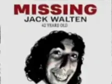
Bon's Burgersが開店する
作中のサイト「Find Jack Walten」の記事（2022年7月の版）では、当初は6月1日に開く予定で、当日に6月28日への延期が発表された。ジャックがいないまま、店は開く。
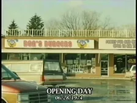
スーザンがボンに襲われる
最初の誕生日パーティーが終わった夜、バックステージを一人で点検していたスーザンが襲われる。
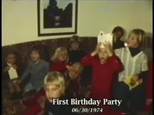
スーザンがバニーの中に詰め込まれる
午前1時36分、ボンがまだ息のあるスーザンをバニーの機体に詰め込む。
チャールズが行方不明になる示唆
ファイル3は「MISSING - 07-14-74」と繰り返す声とともに、損なわれたチャールズの顔を映す。ブーズーの中に閉じ込められたことが示唆される。
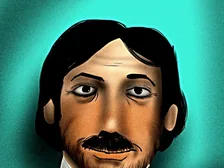
ローズマリーが殺害される
結婚15周年の日にソフィーと衝突して森の川へ入水し、保護された警察署の留置場からボンに誘導されてBon's Burgersへ赴く。舞台裏でRocketを巡る対話の末にボンに殺害され、シャの機体に詰め込まれた。
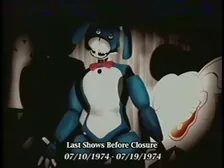
Bon's Burgersが閉業する
開店から約3週間だった。
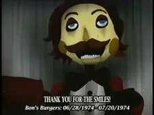
ブライトン市警がソフィーから聞き取り、ウォルテン家を調べる
保安官フランク・デイヴィスとデレク・コリンズ刑事が、前夜の母親との口論についてソフィーに尋ねるが、ソフィーはほとんど答えられない。ウォルテン家の捜索ではローズマリーの日記『My Soul』やジャックの行方不明ポスターが押収され、アトリエの所見は7月21日付で記録される。聞き取りの日付は、「昨夜」という質問からの推定。
ブライトン市警がフェリックスから事情聴取する
デレク・コリンズ刑事らが7月20日未明にBon's Burgers店内にいたフェリックスを追及するが、フェリックスは「寝泊まりしていた」と弁明して退席する。
店舗が封鎖されている
窓に板が打ち付けられ、「Condemned（使用禁止）」の札が下がる。板の隙間からボンが覗いている。
地元局が失踪事件を報じる推定
Local 57のレポーターが、閉鎖された店の前から伝える。時期は、作中の「4ヶ月前にオープンした」という発言からの推定。
ショーストッパーズの4体がK-9保管施設に積まれている
外装は黒ずみ、内骨格が露出している。施設の外観の写真には1974/12/10の日付がある。
BSIがK-9向け緊急ホットラインを導入し、管理人デビッドが怪異から生還する
1977年6月20日付の案内テープで緊急通報回線が設置される。夜勤に入った管理人デビッド・ゴンザレスは館内の物音と悪臭を本社へ訴えるも退去を拒まれ、ブーズーやチャールズの霊、「Bon」の襲撃を振り切って森へ逃げ延びた。
移転プロジェクトが始まる
保管していたロボットを直し、1982年に新しい店を開く計画。説明ビデオは、フェリックス一人を「創業者」として掲げる。
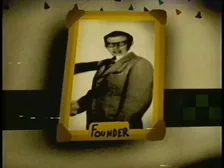
K-9保管施設の案内ビデオが作られる
施設管理人向けの案内に、ローズマリーが殺された夜の再現が割り込む。
技術者3名がK-9保管施設で作業する
再プログラムは失敗に終わる。最終日の夜、アシュリー・パークスがボンに襲われ、遺体はビリーの中に詰め込まれる。
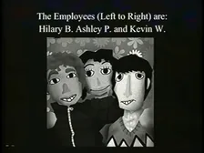
バニーの再プログラムを映したテープが作られる
作業が失敗に終わってから約1ヶ月後の日付になっている。
子ども向けアニメ「リトルボンのご近所」が作られる
BSI傘下のサンライトアニメーションが制作した番組。
ブライアンが殺害される
新任の施設管理人ブライアン・ステルズが、K-9保管施設でボンの動作を確かめる。森へ逃げた先で殺害され、画面に「he thought i was her.」と出る。
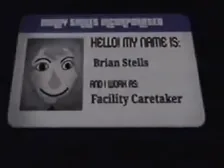
ソフィーが『BunnyFarm』を遊ぶ
ホテルの地下室に置かれた筐体を、2日間にわたって遊ぶ。ジェニーは途中で席を外し、ソフィーは一人で続ける。ゲームの画面に、1974年の出来事が次々に現れる。
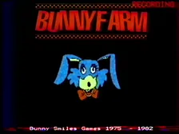
BSIが消滅する
移転プロジェクトのテープは、このとき破棄されたはずだった（元社員の証言）。